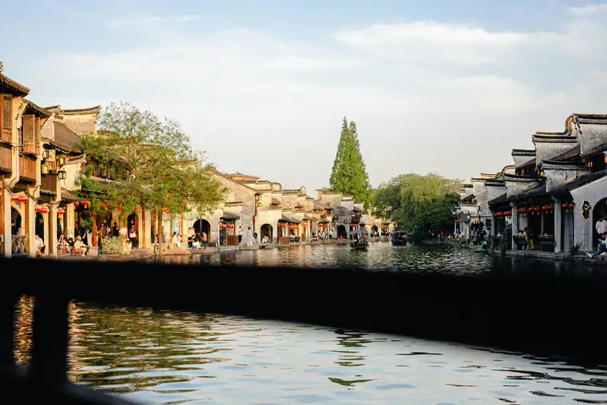
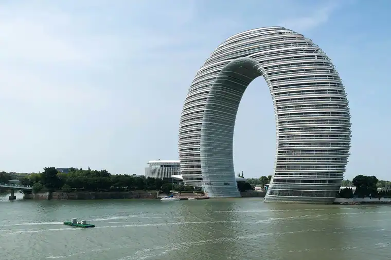
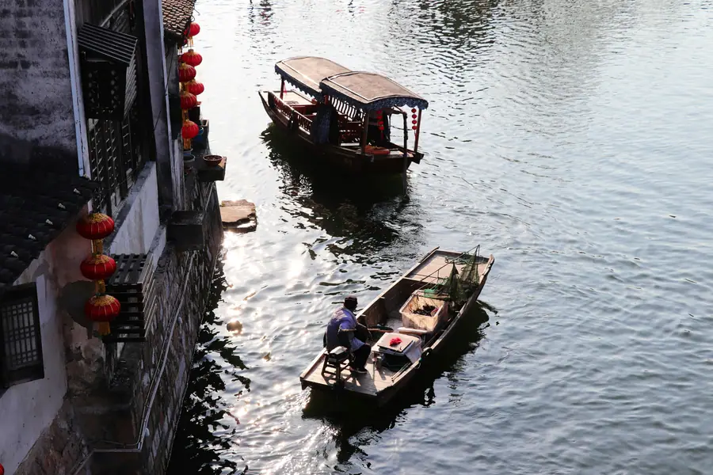

Huzhou Airport Transfer & Private Car
Licensed professional driver in China's Silk Capital. Fixed price. Visit Taihu Lake, Nanxun water town, Feiying Pagoda, and silk workshops — with a private car and driver for your comfort.
Huzhou in Pictures
Real scenes from Huzhou — landmarks, streets and everyday life.



Huzhou at a Glance
Huzhou (湖州) — "Lake Prefecture" — is a prefecture-level city in northern Zhejiang Province, on the southern shore of Taihu (Lake Tai / 太湖), China's third-largest freshwater lake. Huzhou is one of the birthplaces of Chinese silk — Huzhou silk (湖丝) has been produced for over 4,000 years and won the first prize at the 1851 Great Exhibition in London. The city is home to the famous Nanxun (南浔) water town — one of the most prestigious water towns in the Jiangnan region — and is famous for Huzhou white tea (湖州白茶), freshwater pearls from Taihu Lake, and the ancient Feiying Pagoda (飞英塔). Huzhou is approximately 80km from Shanghai, 90km from Hangzhou, and 70km from Suzhou.
Huzhou Silk — 4,000 Years of Silk Heritage
Huzhou is one of the birthplaces of Chinese silk, with silk production in the region dating back over 4,000 years to the Neolithic period. The unique water quality of Taihu Lake and the region's humid climate create ideal conditions for silkworm cultivation, producing silk of exceptional quality. Huzhou silk (湖丝) was designated as a tribute silk (贡缎, gòngduàn) to the imperial court during the Tang and Song dynasties — meaning it was reserved exclusively for the emperor and his court.
Huzhou silk achieved international recognition at the 1851 Great Exhibition in London — the world's first World's Fair — where Nanxun silk won the first prize in the international silk category, marking the first time Chinese silk received formal international recognition. Today, Huzhou is one of China's most important silk production and trading centers, with the China Silk Museum (中国丝绸博物馆) — the world's largest silk museum — located in Huzhou's capital.
Name Origin
The name Huzhou (湖州) — "Lake Prefecture" — dates to the Sui Dynasty (602 CE) when the city was officially elevated to prefecture status and named for its location on the southern shore of Taihu (Lake Tai, 太湖). The character tinuous use for over 1,400 years. The city has also historically been known as
Nanxun — The Most Prestigious Jiangnan Water Town
Nanxun (南浔) — Huzhou's most famous water town, located approximately 50km south of the Huzhou city center — is widely considered the most prestigious and wealthy water town in the Jiangnan region. Unlike the more tourist-oriented water towns of Wuzhen and Xitang, Nanxun retains a more authentic atmosphere and is famous for its wealthy merchant mansions (豪宅) — the mansions of the Nanxun silk merchants were among the most magnificent in China during the late Qing Dynasty. The town's — a 300-meter-long traditional residential complex built during the Ming and Qing dynasties — is one of the most impressive examples of water town architecture in China.
Geography & Location
Huzhou is located in northern Zhejiang Province, on the southern shore of Taihu (Lake Tai, 太湖) — China's third-largest freshwater lake. The city sits at the heart of the Yangtze River Delta integration area, approximately 80km from Shanghai to the east, 90km from Hangzhou to the south, and 70km from Suzhou to the north. The Taihu Lake area — with its fertile farmland, abundant water resources, and excellent transport connections — has been one of China's most economically productive and culturally rich regions for over 2,000 years. The city is connected to Shanghai and Hangzhou by the Shanghai–Hangzhou Expressway (沪杭高速) and the high-speed rail line.
Top huzhou Attractions
Visit Taihu Lake scenic area, Feiying Pagoda, Mogan Mountain, Nanxun Ancient Town, and the Anji Bamboo Forest.
Popular Huzhou Routes
Fixed-price private car service for Huzhou's most popular journeys.
🏘️ Nanxun Water Town Half-Day
From ¥284($40)~50 km · 1 hr drive · 4–5 hours · Business vehicle
Your driver takes you to Nanxun (南浔) — approximately 50km south of Huzhou city center — for a half-day visit to the most prestigious water town in the Jiangnan region. Explore the Baijianlou (百间楼), the wealthy merchant mansions, the traditional gardens, and the water town's canals. Your driver waits during your visit.
🛕 China Silk Museum & Feiying Pagoda
From ¥546($76.9)~10 km · 25 min drive · 3–4 hours · Business vehicle
Your driver takes you to the China Silk Museum — the world's largest silk museum — and the Feiying Pagoda (飞英塔) in the Huzhou city center for a half-day of cultural exploration. The Silk Museum includes live silk weaving demonstrations and the Feiying Pagoda is one of the oldest stone pagodas in Zhejiang.
🗼 Changxing Tea Plantation Day Trip
From ¥284($40)~60 km · 1.5 hr drive · Full day · Business vehicle
Your driver takes you to Changxing County (长兴县) — approximately 60km from Huzhou — for a full day at the Huzhou white tea (湖州白茶) plantations. Tour the tea fields, visit a tea processing facility, participate in tea picking (seasonal), and taste the fresh spring harvest at a traditional tea house.
⛰️ Hangzhou Xiaoshan Airport → Huzhou
From ¥284($40)~110 km · 1.5 hr drive · Economy/Business/MPV
Hangzhou Xiaoshan International Airport (HGH) is approximately 110km from Huzhou (1.5 hours by car). Your driver meets you at the airport arrival hall with a name board and drives you directly to your Huzhou hotel, Nanxun water town, or Taihu Lake.
Transparent Pricing in Huzhou
Published rates, no estimate games. Check the numbers yourself before you book — and the price you see is the price your driver is paid from.
Fixed Price List — 湖州 (Huzhou)
Published rates from our 2026 quote sheet. Renminbi first, USD for reference at 1 USD = ¥7.10. Every price below already includes tolls, parking, driver service and free airport waiting time — nothing is added on the day.
🛬 Airport & Intercity Transfer
One flat fare for airport pickup, drop-off or city-to-city — intercity costs the same as the airport run. 35 km included; beyond that we charge by the minute and the kilometre at the rates shown.
| Vehicle | Seats | Bags | Fixed fare | USD | Beyond 35 km |
|---|---|---|---|---|---|
| 4座 经济型专车 | 4 | 2 | ¥284 | ≈ $40.0 | ¥1.33/min · ¥6.3/km |
| 4座 舒适型专车 | 4 | 2 | ¥406 | ≈ $57.18 | ¥1.47/min · ¥6.97/km |
| 6座 商务车 | 6 | 3 | ¥501 | ≈ $70.56 | ¥1.56/min · ¥7.41/km |
| 8-11座 商务车 | 11 | 4 | ¥780 | ≈ $109.86 | ¥2.03/min · ¥9.63/km |
| 12-18座 商务车 | 18 | 4 | ¥905 | ≈ $127.46 | ¥2.26/min · ¥10.74/km |
| 19-55座 大巴 | 55 | 5 | ¥1061 | ≈ $149.44 | ¥2.57/min · ¥12.23/km |
🚗 Hourly Private Charter
Book the car and the hours, keep the car for the day. Unused kilometres can be carried into the next tier, so a long day never turns into a penalty. The driver stays with you — you set the stops.
| Vehicle | 2h / 35km | 4h / 50km | 6h / 75km | 8h / 100km | 10h / 125km |
|---|---|---|---|---|---|
| 4座 专车 | ¥338 | ¥546 | ¥650 | ¥754 | ¥884 |
| 6座 商务车 | ¥442 | ¥715 | ¥845 | ¥975 | ¥1144 |
| 8-11座 商务车 | ¥636 | ¥1030 | ¥1217 | ¥1404 | ¥1647 |
| 12-18座 商务车 | ¥764 | ¥1236 | ¥1460 | ¥1685 | ¥1977 |
| 19-55座 大巴 | ¥917 | ¥1483 | ¥1752 | ¥2022 | ¥2372 |
Why travellers book Huzhou with Chinawheely
Six things you get with every booking — in Huzhou and across all 346 cities on the platform.
Licensed travel agency, not a ride-hail app
Chinawheely is a registered travel agency (L-HUB-101603). Your booking is a travel contract with a licensed operator — not a broker handing your number to whoever answers the phone.
One locked price, shown before you pay
The price you see is the price you pay. Tolls, parking, driver service and airport waiting time are already inside it. No surge pricing, no meter, no cash-on-the-day surprise.
Flight tracked, waiting time on us
We watch your flight number in real time. If it lands late or is delayed, your driver shifts with it and the waiting time stays on us — not on your bill.
A licensed driver who knows the city
Every car is driven by a professional local driver who knows the routes, the shortcuts and the parking that actually works near the attractions — with English communication and a name board on arrival.
Free changes up to 48 hours before
Plans move. Reschedule or cancel any booking free of charge up to 48 hours before your scheduled pickup, straight from your confirmation link.
A real human on WhatsApp, 8AM–12AM Beijing time
One message reaches a person who can re-price, re-route or re-plan your trip on the spot. No ticket queue, no chatbot loop.
Book Huzhou at the published price
Pick your vehicle, see the fare line by line, and pay by PayPal or Alipay. Free changes up to 48 hours before pickup — or ask on WhatsApp and we will hold a car for you.
Getting to Huzhou: Airports & Railway Stations
Getting to Huzhou by air, rail, or road
🚄 Huzhou Railway Stations
🌊 Huzhou Railway Station (湖州站)
Shanghai–Hangzhou high-speed rail corridor
Huzhou Railway Station (湖州站) is on the Shanghai–Hangzhou high-speed rail corridor, with frequent high-speed services to Shanghai (via Suzhou, 1.5 hours), Hangzhou (1 hour), Nanjing (2 hours), and Beijing (4.5 hours via the Beijing–Shanghai high-speed rail). The station is the main arrival point for high-speed rail visitors to Huzhou. The Ninghang high-speed rail (宁杭高铁) connects Huzhou directly to Nanjing and Hangzhou.
✈️ Nearby Airports
⛰️ Hangzhou Xiaoshan International Airport (HGH)
~110 km · 1.5 hr drive
Hangzhou Xiaoshan International Airport (HGH) — Zhejiang Province's main international hub — is approximately 110km from Huzhou (1.5 hours by car). Most international visitors to Huzhou fly to Hangzhou first, then take the high-speed rail (1 hour) or private car (1.5 hours) to Huzhou. Hangzhou Airport has flights to most major Chinese cities and international destinations including Hong Kong, Taiwan, Japan, Korea, and Southeast Asia.
⛰️ Shanghai Hongqiao International Airport (SHA)
~130 km · 2 hr drive · 1.5 hr by rail
Shanghai Hongqiao International Airport (SHA) — Shanghai's main domestic and regional international hub — is approximately 130km from Huzhou (2 hours by car or 1.5 hours by high-speed rail via Shanghai Hongqiao Railway Station, which is connected to the airport terminal). Hongqiao Airport is a major arrival point for visitors to the Yangtze River Delta and is well-connected by high-speed rail to Huzhou.
⛰️ Shanghai Pudong International Airport (PVG)
~150 km · 2.5 hr drive
Shanghai Pudong International Airport (PVG) — Shanghai's main international hub for long-haul flights — is approximately 150km from Huzhou (2.5 hours by car). Most visitors arriving at Pudong continue by private car or by high-speed rail from Shanghai Railway Station (reachable by the Shanghai Metro from Pudong Airport). A private car from Pudong Airport to Huzhou is the most comfortable option for international arrivals.
Huzhou's Best Photo Spots
The places in Huzhou worth stopping for — and a car that waits while you take the shot.
💧 Taihu Lake scenic area
Best at sunrise
Taihu Lake scenic area is one of Huzhou's signature sights and a natural place to stop for a photo. Your driver drops you at the entrance, waits while you shoot, and takes you on to the next stop in the same area.
🏯 Feiying Pagoda
Best in the late afternoon
Feiying Pagoda is one of Huzhou's signature sights and a natural place to stop for a photo. Your driver drops you at the entrance, waits while you shoot, and takes you on to the next stop in the same area.
⛰️ Mogan Mountain
Best at dusk
Mogan Mountain is one of Huzhou's signature sights and a natural place to stop for a photo. Your driver drops you at the entrance, waits while you shoot, and takes you on to the next stop in the same area.
🏘️ Nanxun Ancient Town
Best in soft morning light
Nanxun Ancient Town is one of Huzhou's signature sights and a natural place to stop for a photo. Your driver drops you at the entrance, waits while you shoot, and takes you on to the next stop in the same area.
Food & Shopping in Huzhou
🍜 Must-Try Huzhou & Jiangnan Cuisine
Huzhou Zhanjiang Noodles (湖州震远同)
The Zhenyuan Tong (震远同) — Huzhou's most famous traditional snack brand — is famous for its , , and . The large wontons — filled with pork and shrimp — are served in a rich, clear chicken broth and are a Huzhou specialty not found elsewhere. The best place to try these is at the Zhenyuan Tong shop near Huzhou's old town.
Taihu Lake Freshwater Fish (太湖鲜鱼)
The freshwater fish from Taihu Lake — including silver carp, grass carp, and the prized Taihu sea bass (太湖鳜鱼) — are among the finest freshwater fish in China. The Huzhou preparation — typically steamed (清蒸) with ginger, scallion, and soy sauce — lets the freshness of the lake fish speak for itself. Found at lakeside restaurants along the Huzhou shore of Taihu Lake.
Huzhou White Tea (湖州白茶)
Huzhou white tea (湖州白茶) — grown in the Changxing tea plantations — is one of China's most prized white teas. The tea is made from the unopened leaf buds of the tea plant, dried in the sun, and has a delicate, slightly sweet flavor with notes of honey and fresh grass. The spring harvest (before the Qingming festival) is the highest quality. Found at tea specialty shops in Huzhou and at the Changxing tea plantations.
Taihu Lake Freshwater Pearls (太湖珍珠)
The freshwater pearls from Taihu Lake — produced by freshwater mussels in the lake — are among the finest freshwater pearls in the world. The Huzhou area has been cultivating freshwater pearls for over 1,000 years. The pearls — in shades of white, pink, lavender, and gold — are sold at pearl shops throughout Huzhou. The best quality pearls have a thick nacre, a high luster, and a clean surface.
Huzhou Dongpo Pork (湖州东坡肉)
The Dongpo Pork (东坡肉, dōng pō ròu) — pork belly braised in soy sauce, rice wine, and rock sugar — is said to have been first prepared by the Song Dynasty poet and official Su Dongpo (苏轼) during his exile in Huzhou. The dish — rich, tender, and slightly sweet — is a local specialty in Huzhou. The best versions use the traditional recipe with the characteristic cube shape, the dark lacquered sauce, and the longan (龙眼) fruit served alongside.
🛍️ Shopping Destinations
China Silk Museum Gift Shop
The China Silk Museum gift shop sells a curated selection of high-quality silk products — including scarves, clothing, and home textiles — from established Huzhou silk brands. The advantage of buying here is the museum's quality assurance — all products are verified as genuine silk. The selection is more limited than the wholesale markets but the quality is guaranteed.
Huzhou Silk Wholesale Market
The Huzhou silk wholesale market — in the silk trading district near the city center — offers the widest selection of silk products at competitive prices. The market has hundreds of shops selling silk scarves, clothing, bedding, and raw silk fabric. Prices here are significantly lower than retail shops, and most shops can arrange delivery anywhere in China and internationally.
🎁 What to Buy in Huzhou
Huzhou Silk Products
Huzhou silk (湖丝) — including silk scarves, silk clothing, silk bedding, and raw silk fabric — is sold at the China Silk Museum gift shop and at the Huzhou silk wholesale market. The best quality silk should feel smooth, cool, and slightly heavy. Look for the "100% silk" label and verify quality by touch. The Huzhou silk wholesale market offers the best prices; the museum gift shop offers the best quality assurance.
Huzhou White Tea
Huzhou white tea (湖州白茶) — from the Changxing tea plantations — is sold at tea specialty shops in Huzhou and at tea farms in Changxing County. The spring harvest (明前茶, before Qingming) is the highest quality and commands premium prices. The tea should be stored in a cool, dry place. Buy from established tea shops where you can verify quality by taste before purchasing.
Taihu Lake Freshwater Pearls
Taihu Lake freshwater pearls (太湖珍珠) — in shades of white, pink, lavender, and gold — are sold at pearl shops throughout Huzhou. The best quality pearls have a thick nacre, a high luster, and a clean surface. Look for pearls with a mirror-like reflection. The pearl farms in the Taihu Lake area also sell directly to visitors at wholesale prices.
Intangible Cultural Heritage & Living Crafts of Huzhou
Traditional crafts and cultural traditions of China's Silk Capital on Taihu Lake.
🧵 Huzhou Silk Weaving (湖丝织造)
The traditional craft of Huzhou silk weaving (湖丝织造) — producing silk fabric on traditional wooden jacquard looms — has been practiced in the Huzhou area for over 4,000 years, making it one of the oldest continuous silk production traditions in the world. The craft involves cultivating mulberry trees, raising silkworms, reeling silk thread from cocoons, and weaving the thread into fabric on traditional wooden jacquard looms. The traditional patterns — including dragon, phoenix, floral, and geometric designs — are created by hand-controlled jacquard mechanisms. This craft is documented in the China Silk Museum and practiced in Huzhou's silk workshops.
Where to see: China Silk Museum, Huzhou silk workshops, live demonstrations.
🍵 Huzhou White Tea Production (湖州白茶制作)
The traditional craft of Huzhou white tea production (湖州白茶制作) — producing China's most prized white tea from unopened tea leaf buds — has been practiced in the Changxing tea plantations for over 1,000 years. The craft involves hand-picking the unopened leaf buds at precisely the right moment (before the Qingming festival for the highest quality), then sun-drying and lightly baking the buds to halt oxidation. The result is a tea with a delicate, slightly sweet flavor and a distinctive white appearance. This craft is practiced at tea farms in Changxing County.
Where to learn: Changxing tea plantations, Huzhou tea houses.
🏠 Nanxun Water Town Architecture (南浔水乡建筑)
The traditional craft of Nanxun water town architecture (南浔水乡建筑) — the construction and maintenance of the traditional courtyard houses, garden pavilions, and canal-side buildings of the Nanxun water town — has been practiced for over 500 years. The Nanxun merchant mansions — built with silk wealth during the late Qing Dynasty — represent the finest examples of water town residential architecture in the Jiangnan region. The traditional construction techniques — using whitewashed walls, grey tile roofs, carved wooden brackets, and stone-paved courtyards — are maintained by traditional craft practitioners in Nanxun.
Where to see: Nanxun water town, Baijianlou, Nanxun merchant mansions.
💎 Taihu Lake Pearl Cultivation (太湖珍珠养殖)
The traditional craft of Taihu Lake pearl cultivation (太湖珍珠养殖) — cultivating freshwater pearls in the mussel beds of Taihu Lake — has been practiced in the Huzhou area for over 1,000 years. The craft involves implanting a small bead (nucleus) into the freshwater mussel, which then deposits layers of nacre around the bead to form a pearl. The mussels are harvested after 2–5 years, and the pearls are extracted, cleaned, and sorted by quality. The craft is practiced at pearl farms on the Huzhou shore of Taihu Lake and documented in the Taihu Lake Pearl Museum.
Where to see: Taihu Lake pearl farms, Taihu Lake Pearl Museum.
🗼 Stone Pagoda Construction (石塔建造)
The traditional craft of stone pagoda construction (石塔建造) — building stone pagodas without the use of mortar, using precisely carved stone blocks fitted together by gravity and interlocking — was practiced in China from the Tang Dynasty onward. The Feiying Pagoda (飞英塔) in Huzhou — with its unique double-shell structure — represents a particular refinement of this craft, with the inner and outer pagoda shells constructed as independent but nested structures. This craft tradition is documented at the Feiying Pagoda site.
Where to see: Feiying Pagoda, Feiying Temple complex.
🏺 Liangzhu Jade Carving (良渚玉雕)
The traditional craft of Liangzhu jade carving (良渚玉雕) — the Neolithic jade carving tradition of the Liangzhu culture (良渚文化, 5,300–4,300 years ago) centered in the Huzhou area — represents one of the finest jade working traditions in world history. The Liangzhu people produced jade cong (玉琮), bi (玉璧), and axe (玉钺) with intricate carved motifs that are still not fully understood by modern scholars. The craft tradition continues in modified form in Huzhou's jade carving workshops, which produce contemporary jade items inspired by Liangzhu designs.
Where to see: Huzhou Museum, Zhejiang Provincial Museum (Hangzhou).
Huzhou Local Secrets
Insider tips to help you experience Huzhou like a local.
Visit Nanxun Early Morning to Beat the Tour Groups
Nanxun (南浔) is the most prestigious water town in the Jiangnan region but also increasingly popular with tour groups from Shanghai and Hangzhou. The water town is most magical in the early morning (7–9 AM) — before the tour buses arrive — when the morning mist rises from the canal, the locals practice tai chi on the canal bank, and the traditional buildings are at their most atmospheric. Your driver can arrange an early departure from Huzhou so you arrive at Nanxun at opening time.
Buy Silk at the Wholesale Market, Not the Tourist Shops
The Huzhou silk wholesale market — not the tourist shops near the attractions — is where locals and professional buyers purchase silk. The prices are significantly lower and the quality is often better. Look for shops where the owner is actively working — this usually indicates they are a primary producer rather than a middleman. Ask to see the silk production process — most primary producers are happy to show how their silk is made.
Come in April for the Tea Harvest at Changxing
If you're visiting Huzhou in spring, plan your trip to coincide with the Changxing tea harvest (明前茶, before Qingming Festival) — the highest quality Huzhou white tea. The spring harvest season (typically late March to early May) is when the tea fields are at their most beautiful and the tea is at its best. At this time, the tea pickers can be seen working the rows in the early morning, and the tea houses at the plantations serve the fresh spring harvest to visitors.
Eat Lakeside at Taihu Lake at Sunset
The Taihu Lake shoreline restaurants in Huzhou — serving fresh Taihu Lake fish — are at their best at sunset when the lake views are most dramatic and the evening breeze provides relief from the summer heat. Arrive around 5:30 PM to secure a good lakeside table. The signature dish is steamed Taihu sea bass (清蒸太湖鳜鱼) with ginger, scallion, and soy sauce — best eaten with cold beer while watching the sunset over the lake.
Buy Freshwater Pearls Directly from the Pearl Farm
The Taihu Lake pearl farms on the Huzhou shore sell freshwater pearls directly to visitors at wholesale prices — significantly lower than retail pearl shops. The pearl farmers can show you the mussel implantation process and explain how the pearls form. The best time to visit the pearl farms is in the afternoon when the farmers are cleaning and sorting the harvested pearls. You can select individual pearls or pearl strands to your exact specifications.
Visit the Feiying Pagoda Before the Crowds
The Feiying Pagoda (飞英塔) — one of Huzhou's most distinctive landmarks — is most atmospheric in the early morning when the temple complex is quiet and the stone pagoda is bathed in morning light. The temple complex is typically visited by tour groups from mid-morning onwards. Arriving at opening time (typically 8 AM) gives you the pagoda almost to yourself. The pagoda's unique double-shell structure — one pagoda inside another — is best appreciated when you can walk around it without crowds.
Day Trips from Huzhou
Real destinations around Huzhou, reached comfortably with a private car and a licensed professional driver.
Best Time to Visit Huzhou
The climate record of Huzhou decides when the city is at its most comfortable to walk.
The annual average temperature is 16.3 °C; annual rainfall averages 1,303 mm; July is the hottest month at 28.5 °C; January the coldest at 3.7 °C; The climate pattern includes The monsoon.
Spring
Monthly means in March, April, May run 10–21 °C. Rainfall over those three months totals about 331 mm.
Summer
Monthly means in June, July, August run 24–28 °C. Rainfall over those three months totals about 526 mm.
Autumn
Monthly means in September, October, November run 12–24 °C. Rainfall over those three months totals about 249 mm.
Winter
Monthly means in December, January, February run 4–6 °C. Rainfall over those three months totals about 197 mm.
Useful Chinese Phrases for Huzhou
A few words for China's Silk Capital on Taihu Lake.
👋 Nǐ hǎo
你好
Hello — The universal greeting.
🙏 Xièxiè
谢谢
Thank you — Locals appreciate the effort.
🧵 Wǒ yào mǎi sīchóu
我要买丝绸
I want to buy silk — Tell the silk market shops that you want to buy Huzhou silk products.
🏘️ Wǒ yào qù Nánxún
我要去南浔
I want to go to Nanxun — Tell your driver you'd like to visit the most prestigious water town in the Jiangnan region.
🍵 Wǒ yào mǎi báichá
我要买白茶
I want to buy white tea — Tell the tea shop you'd like to purchase Huzhou white tea from Changxing.
🌊 Wǒ yào kàn Tàihú
我要看太湖
I want to see Taihu Lake — Tell your driver you'd like to visit Taihu Lake and the Moon Harbour.
Book Your Huzhou Transfer
Fixed price, licensed professional driver. From Hangzhou Airport or Huzhou Station to Nanxun water town, the China Silk Museum, and Taihu Lake.
Get Instant QuoteQuestions? WhatsApp +86-155-2777-1775
Travel Essentials for Your Huzhou Trip
Make your Huzhou Silk Capital journey smoother with these services.
Mobile Pocket Wi-Fi
Stay connected across the Yangtze River Delta with a pocket Wi-Fi device. Pre-book online and pick up at Hangzhou Airport or Shanghai airports, or have it delivered to your Huzhou hotel.
Book Wi-Fi at ChinaWiFiGoEnglish-Speaking Guide
Explore Nanxun water town and the China Silk Museum with a professional English-speaking guide who knows the silk industry, the water town history, and the Jiangnan cultural heritage.
Book Guide at VIPChinaGuideMedical Services
Add a health checkup, dental cleaning, or traditional Chinese medicine session to your Huzhou trip. Hangzhou has excellent international-standard medical services, about 1.5 hours from Huzhou.
Book Medical at MediEscortChinaMore China destinations
Compare routes, published prices and local driver tips across the cities we cover.